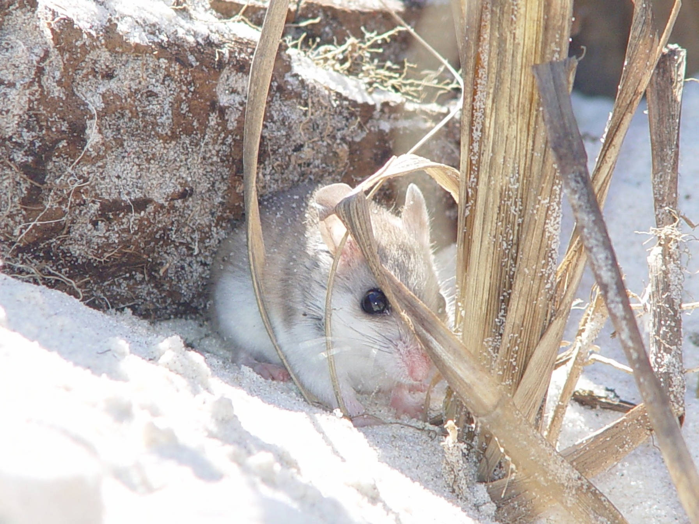
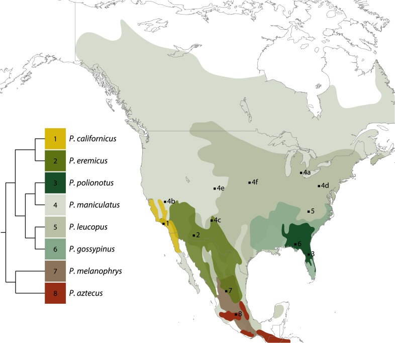

Quick Facts
- Size: 5-5.5 inches
- Weight: 10-17 grams
- Lifespan: 4-9 months
- Conservation Status: Endangered
- Range: Coastal dunes in the southeastern United States
Key Nighttime Adaptations
Beach mice have adapted to night time activity with enlarged eyes and ears. They also have a strict nocturnality to avoid predators and extreme daytime heat. They seal themselves deep inside burrows of coastal dunes during the day for protection.
Diet
Beach mice are herbivores, eating seeds and other plant matter. Their primary food source is a deeply rooted grass, sea oats, native to southeastern United States and Mexico.
Role in Ecosystem
This endangered species provides a crucial role in coastal dune ecosystems. By foraging more seeds than they can eat, they disperse the vegetation that shape coastal dunes. Beach mice are constantly digging. They burrow extensive tunnel systems in the dunes ultimately creating habitats and a cool shelter for other dune-dwelling organisms. Beach mouse populations are monitored closely as they are an environmental indicator species, relying on a perfectly healthy and intact coastal dune ecosystem for their survival.
Fun Fact: Beach mice build secret escape hatchees into their burrows to evade predators.


Light Pollution's Effect on Beach Mice
Since these mice rely on pitch black darkness to hide from their predators, ALAN completely disrupts their ability to remain concealed, making them more vulnerable to predation. There have been studies showing beach mice foraging up to one-third less food patches of artifical light. This all ultimately leads to their decreased survival and overall population decline.